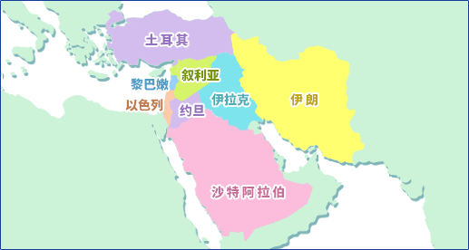

中近东的酸奶以色列/伊拉克/伊朗/沙特阿拉伯/叙利亚/土耳其/约旦/黎巴嫩 
以色列公元前2000年，据说已经食用源自美索不达米亚的羊乳奶酪，是一个乳制品食用历史悠久的地区。即使到了现在，还大量生产发酵乳“Leben”和浓缩发酵乳“Lebeni”。“Lebeni”也被读作“Lebene”、“Lebenia”或“Labneh”。通常虽然食用新鲜的制品，但有时会浸泡在橄榄油里，或者使其干燥提高保存性。干燥后的制品称为“Dubaki”。 伊拉克在伊拉克农村，人们制作一种叫“Leben”的发酵乳，可直接或加放香料食用。这种类型的发酵乳被称为“Loobah”、“Laban Zabady”、“Laban”或“Leben”等。另外，在北部地区，把加热后干燥的粗碾小麦和酸奶混合发酵1个小时，然后在日光下晒干后制成粉末，称之为“Kchouk”，泡水溶解后饮用。 伊朗伊朗人称酸奶为“Maasut”。在伊朗和阿富汗，特别是夏季人们爱喝的“Dooqh”作为使用Maasut的饮料很受人们欢迎。通常，酸奶用水稀释2倍左右，然后放入1%食盐、薄荷等香草制成。另一方面，传统的“黄油Dooqh”是将用水稀释的酸奶放入皮袋中晃动，在去除黄油后的黄油牛奶中加放咸味和香味制成。黄油牛奶的凝乳经干燥后的保存食品叫做“Kashk”。 沙特阿拉伯自古以来，人们就放牧羊和山羊，还饲养骆驼。有纯味的饮用型酸奶“Laban”、纯味的凝固型酸奶“Zabady”以及浓缩酸奶“Labneh”等。使乳自然发酵，去除漂浮的奶油可制成“Laban raybe”。沙漠地带的贝都因族把从发酵乳中去除乳清后的凝乳分成小块，经风干制成可保存的“Madere”，再用水将其恢复成酸奶状，或者用热水溶解后做汤食用。其他保存食品还有将黄油牛奶加热后的凝乳使之风干制成的“Octo”。而沙漠中生活的牧民则制作一种酸奶类的饮料，叫做“Loobah”。 叙利亚畜牧业主要是山羊和羊。在叙利亚，人们制作酸奶“Laban”、浓缩酸奶“Labneh”和黄油牛奶“Ayran”。Labneh撒上辣椒粉、孜然粉、薄荷等，再滴上橄榄油等食用。“Lebenen Bezzet”是把羊乳和山羊乳装进皮袋中发酵，经搅拌去除黄油，在剩下的黄油牛奶中加放食盐并去除乳清后制成凝乳，再把这些凝乳捏成球状用橄榄油浸泡制成。 土耳其土耳其的畜牧业，是以遍布土耳其中部的安纳托利亚高原为中心发展起来的，羊乳产量世界第一。传统酸奶中有通过脂肪含量很高的羊乳和水牛乳制成的“西利夫里酸奶”。这种酸奶是将脂肪含量4-5.5%的乳液装入容器，不上盖，在40-50℃花1小时左右时间，在其表面制作金黄色的奶油层后使之发酵，这种方法不同于其他任何制作方法。在酸奶中放入浓度1%的同量食盐水混合而成的“Ayran”，是土耳其的国民饮料，在餐桌上必见。游牧民把从酸奶中提取黄油后剩余的黄油牛奶称为“Ayran”，加放食盐饮用。除此以外，还有把酸奶放入布袋（称作Torba）去除乳清，制成乳固体30%左右的浓缩酸奶“Torba”。另外，夏季制作，冬季食用，被称为冬季酸奶的“Kiss yogurt”，在加热后去除乳清后的浓缩酸奶中加放盐，然后装入壶中，在表面覆盖橄榄油保存。可以和香草、香料、橄榄油混合，像软芝士一样食用。 约旦沙漠和干草原占地很广，羊和山羊的牧畜业发达。制作的酸奶有“Laban”和“Labaneh”。贝都因族自古以来就在红茶和料理中使用的“Jameed”，是将自然发酵的羊乳放入皮袋中晃动，然后转移至布袋中去除乳清，在留下的凝乳中加入岩盐制成球状，经日光下干燥制成。 黎巴嫩最常见的发酵乳“Laban”是用牛乳、羊乳、山羊乳和骆驼乳制成的，在家庭制作中将前次剩余的Laban作为起子培养物使用。将Laban装布袋去除乳清后制成的浓缩发酵乳“Labaneh（Labneh）”是冬季食用的。另外，将Labaneh干燥后的“Jab Jab”可用水溶解后加放香料和香草来饮用。“Kishiku”是将Laban和小麦粉混合后干燥制成的。将其捣碎加水，用小火煮成粥状，可与面包一起吃。“Labaneh Abaris”则是用山羊乳制成的Laban经去除乳清，在剩下的凝乳里加放食盐，最后用橄榄油浸泡制成。 |